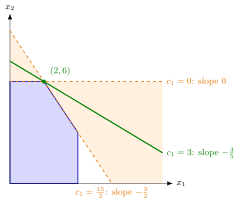

Objective Coefficient Ranging¶
Method¶
Input: a linear program in standard form subject to , , its final tableau for an optimal basis (the set of basic indices, with the nonbasic ones) with basis matrix , cost vector and reduced costs (with , extended by the slack variables of the constraints, so for original variables), and a change of one objective coefficient, with , all other data fixed.
Steps:
- The constraints do not change, so and stay the same: remains feasible and remains a feasible solution. Only the objective row can change.
-
The basis remains optimal if and only if the new reduced costs are nonnegative:
-
If is nonbasic (), then does not change and only the reduced cost of itself changes, to . The condition is .
-
If is basic (), say the -th basic variable, then . The reduced costs of the basic variables stay , and for every nonbasic
where is the entry of column in the row of . A positive entry gives the lower bound , a negative entry gives an upper bound by the same formula, and a zero entry gives no condition. 5. For every in the resulting interval, and the solution remain optimal, and the optimal value becomes ( when is nonbasic). Outside it some reduced cost is negative; the tableau is still feasible, so the revised simplex algorithm can continue from it.
Interpretation¶
An objective coefficient is a price, not a resource: changing it leaves the feasible region and every basis's feasibility alone and only tilts the objective. The question is how far may move before another corner becomes better, in the tableau, before some reduced cost turns negative.

The figure shows Example 1 below, with fixed. The objective line through has slope ; for it is (green). As changes, the line turns about , and the corner stays optimal as long as the line stays in the shaded double wedge between the two edges at : slope at , where the line lies along , and slope at , where it lies along . These are the endpoints of the tableau range ; at either endpoint a whole edge is optimal, and beyond the optimum moves to . The feasible region itself never moves.
Unlike a right-hand-side change, an optimal basis here keeps its solution: does not involve , so inside the range only the value changes. A nonbasic coefficient appears only in its own reduced cost. Lowering it never hurts, and raising it by more than makes the unused activity attractive, so the range is . A basic coefficient sits in and moves all nonbasic reduced costs at once, through its row of , so its range can be bounded on both sides.
This is the tableau version of the objective coefficient range of OR Modelling, found there from the slopes of the binding constraints (compare Example 1 below). Mind the sign convention: OR Modelling and Excel call the reduced cost, so the allowable increase of a nonbasic coefficient is the magnitude of their (nonpositive) number.
A common misreading is that the range is exactly the set of coefficients for which stays optimal. It is the range for the basis: nonnegative reduced costs are sufficient for optimality, but at a degenerate solution can stay optimal beyond it (Example 4 below). At an endpoint some nonbasic reduced cost is and there may be several optimal solutions (Example 3 below).
Key Results¶
- A change of an objective coefficient does not affect the constraints, so the feasible bases and feasible solutions are unchanged.
- For the basis remains optimal if and only if for ; these form a closed interval containing .
- Nonbasic : only changes, to , so the range is .
- Basic in row : only the nonbasic reduced costs change, for .
- Within the range the solution itself stays optimal, and changes by .
Examples¶
1. Both coefficients of a two-variable program. For subject to , , , , with slack variables , the final tableau has basis , nonbasic with , , row of with entries and under , and row of with entries and . For : and , so and . For : , so with no upper bound. Graphically, the objective line through has slope , which must lie between the slopes of and of ; with this is again . Inside, for a change of ; for the optimum moves to with .
2. A basic and a nonbasic coefficient. For with constraints , , , , and slack variables , the optimal basis has nonbasic with reduced costs , and the row of has entries there. For : twice and , so , that is, . The coefficient is nonbasic, so , that is, . Below the range, for , the plan earns , but earns .
3. All three coefficients and an endpoint. For with constraints , , , , and slack variables , the optimal basis is with , , and nonbasic with reduced costs . The rows of and have entries and under . This gives , and . (That the right-hand side of the same program has the same range under right-hand-side ranging is a coincidence of the data: one interval comes from a row of , the other from a column of .) For the solution stays optimal with , as . For , the lower endpoint, : is still optimal with , and letting enter (the ratio test removes ) gives a second optimal corner , also with value .
4. Degeneracy: basis range versus solution range. Take subject to , , , , with . At the optimum all three constraints are binding, so it is degenerate. For the optimal basis with , the reduced costs are and , giving the range . For the basis of the same point they are and , giving . In fact is optimal for every , so the first range is too small for the solution, though correct for its basis.
Prerequisites¶
Related Concepts¶
- Right-Hand-Side Ranging
- Changing a Technology Coefficient
- Adding or Removing a Variable
- Revised Simplex Algorithm
- Objective Coefficient Range
- Reduced Cost
- Multiple Optimal Solutions
- Degeneracy
Sources¶
- Math VI: Convexity and Optimization · Week 7
- H. E. Nusse and M. Dienstknecht, Math VI: Convexity and Optimization, lecture notes 2026–2027, Section 7.2
Aliases: changing an objective function coefficient, cost coefficient ranging, objective coefficient sensitivity analysis Keywords: -\boldsymbol{c}'^{\top}+\boldsymbol{c}{\mathcal{B}}'^{\top}\boldsymbol{B}^{-1}\boldsymbol{A}\geq\boldsymbol{0}^{\top}, \bar{c}_j-\delta\geq0, \bar{c}_k+\delta\,(\boldsymbol{B}^{-1}\boldsymbol{A})\geq0, basic versus nonbasic coefficient, optimal solution unchanged Symbols: delta, element of, lambda, real numbers
Last updated: 10 November 2026 16:43
Objective Coefficient RangingChanging a Technology CoefficientSimplex Tableau in Matrix FormNonoptimality and Reduced CostsSensitivity AnalysisRight-Hand-Side RangingAdding or Removing a VariableRevised Simplex AlgorithmObjective Coefficient RangeReduced CostMultiple Optimal SolutionsDegeneracy